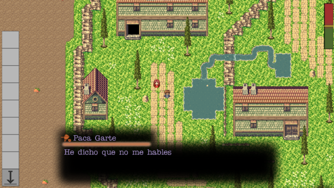

Sobre nosotros
PaniK es un grupo de estudiantes 2º de Desarrollo de Videojuegos de la Facultad de
Informática
de la UCM formado por
Samuel Blázquez,
Nicolás Rosa,
Javier Rubio
y Pablo Sánchez. El nombre del grupo se debe a la sensación que nos produce suspender esta
asignatura.
|
|
|  |
HistoriaRegime Police cuenta la historia de un policía de un régimen dictatorial a quien le ha sido encomendada la misión de frenar la ola revolucionaria que va a armarse en 3 días en contra del Dictador. Para ello, tendrá que investigar a los supuestos cabecillas y buscar información para poder arrestarlos y preservar el régimen. |